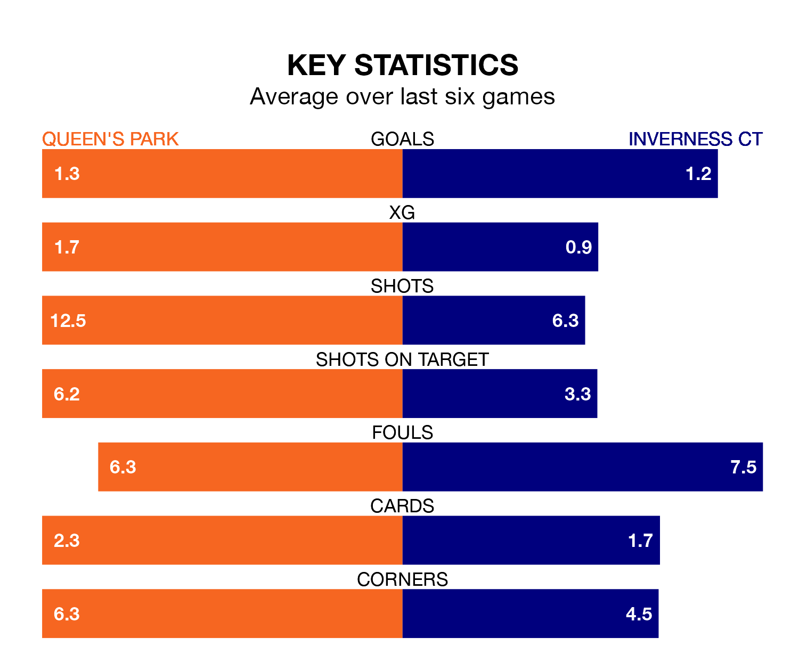

Saturday's match at Hampden Park sees two relegation candidates play each other, as eighth-ranked Queen's Park host seventh-placed Inverness CT.
Queen's Park have picked up 13 points from their first 13 Scottish Championship games, with three wins and four draws.
That is the same number of points as ICT have collected, having also won three and drawn four.
In Ruari Paton, Queen's Park have the league's most on-form striker so far this season. He has notched seven goals in 13 appearances.
Inverness CT's top scorers, with three goals each, are David Wotherspoon, Billy McKay and Nathan Shaw.
With 13 goals in 13 games so far this season, ICT are the league's joint-third-lowest scorers with 1.0 goals per game. But they are conceding fewer than average too, letting in 15 goals at a rate of 1.2 per game.
The Spiders, meanwhile, are average scorers, with 1.4 goals per game. They have conceded 2.1 goals per game.
The hosts are in bad form in Scottish Championship, with no wins and four draws from their last six games.
With two wins and three draws over that period, the away team's form is better – they have taken nine points from 18, compared to Queen's Park's four.
Over the last year, Queen's Park and Inverness CT have played each other on four occasions. Queen's Park won two of them, Inverness CT one, and they drew once.
On average, the Spiders scored 1.0 goal and ICT 1.2 in those matches.
Their last meeting was on August 5, when Queen's Park won 2-1 away.
Queen's Park's last match was on November 11, a 3-2 loss against Raith Rovers, with Jack Turner and Paton getting the goals for the Spiders.
Inverness CT lost 2-1 against Raith Rovers last time out, on December 2, with McKay on the scoresheet.
